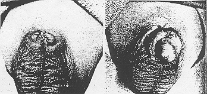
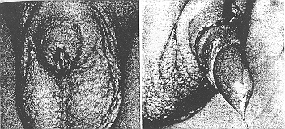

THE CIRCUMCISION REFERENCE LIBRARY
Concealed Penis
Another Complication of Circumcision
The majority of nonritual circumcisions are performed with the aid of devices, the metallic bell (Gomco) clamp and the plastic bell clamp. A significant number of complications mostly minor, have been found in the literature dealing with circumcision. Concealed penis, one such complication, was recently seen in two infants. Inadequate dissection of the prepuce and removal of excess penile skin and removal of excess penile skin are the causes of this complication.
With the exception of ritual circumcision, perusal of the literature concerning circumcision of the infant penis discloses that the overwhelming majority of these procedures are performed with the use of special devices, the metallic bell (Gomco) clamp or the plastic bell clamp.1-9 Neither device diminishes the need for understanding the anatomy of the penis nor does it lessen responsibility for wound care and post-operative observation of the patient. A number of reported complications of circumcision are due to failure to observe recommendations for the use of the device. Displacement of the ring of plastic bell clamp onto the shaft of the penis with the danger of necrosis of the distal penis due to venous and lymphatic obstruction has been cited by several authors.5-7
Excessive bleeding after circumcision most commonly followed use of the metallic bell clamp where dependence for hemostasis was placed only on the crushing effect of the clamp on wound edges.1 Apparent damage to the ventral surface of the penis in control of postcircumcision bleeding was blamed for the development of urethral fistulae in three infants.2,3
Meatal ulceration has been a significant complication in several reported series of infant circumcision. MacKenzie, however, ascribes meatal ulceration to contact of the unprotected glans penis with ammonical diapers and not to the trauma of the operative procedure.
Recent treatment of two infants with concealed penis suggests additional causes for complications of circumcision: failure to perform the operative steps required before application of the circumcision devices to the penis.
| Fig 1.—Left, Concealed penis prior to
operative exposure. Right; Penis after exposure of
glans and suture of inner surface prepuce to
skin.  |
Two infants were admitted with absence of visible penis, an infrapubic cutaneous sinus tract from which urine flowed, and a history of circumcision using a device. Physical examination in both cases otherwise revealed healthy male infants, each with normal scrotum and testicles. Palpation of the pubic area in both infants disclosed a subcutaneous mass believed to be the penis (Fig.1 left and 2 left).
A dorsal incision was made in the sinus tract in both infants, splitting the sinus tract and revealing the glans penis tightly adherent to the inner surface of the prepuce. Excessive smegma was present, particularly in the coronal sulcus. The preputial tissue was dissected proximally away from the glans to its reflection at the corona of the glans penis, and the free edge of the longitudinal dorsal slit then sutured transversely to the pubic skin (Fig 1 right and 2 right. Although a deficit of penile skin seemed present in both infants, no attempt at further construction seemed justified at this time.
|  |
| Fig 2.—Left; Concealed penis. Bulge of glans is seen under skin. Right. Glans exposed and held by traction suture. Suture line of inner surface prepuce and penile skin is visible. |
Comment
In 1958, Byars and Trier10 reported a case of concealed penis identical to the present cases in a 2-month-old male infant. Shulman et al11 reported another case in a 3-year-old boy.
Both groups of authors suggested that the penis was forced into a subcutaneous position by wound contraction following circumcision. They attributed concealment of the penis to readherence of mucous membrane of the prepuce to the glans penis and the tendency of the penis to retract into the fatty mons pubis where it was trapped by the contraction of the circular circumcision wound above it.
We propose a much simpler explanation: failure to completely separate the inner surface of the prepuce from the glans penis. Circumcision, when correctly performed, eliminates the possibility of phimosis by excision of the a sufficient portion of redundant prepuce in order to leave the glans penis exposed. Usually, more of the inner preputial surface than the outer requires excision, so that very little penile skin need be discarded. If the inner surface of the prepuce is not adequately dissected from the surface of the glans penis, mot or all of the inner surface of the prepuce remains. Penile skin is then pulled into the circumcision device and amputated immediately, or in a week’s time in the case of the plastic bell clamp. The circular wound contracts as it heals12 and confines the glans penis in a subcutaneous position.
This deformity should occur less often after circumcision without use of a device, since it is then easier to recognize failure to dissect the prepuce completely free from the glans. MacGowan13 warns, however, that it is possible to bivalve the penis or create hypospadias or epispadias by inadvertent introduction of a scissor blade into the urethral meatus unless the same precautions are taken.
It is essential, therefore, in performing circumcision, by whatever means, that complete dissection of prepuce from the glans penis be carried out, if necessary by carefully enlarging the phimotic orifice as dissection proceeds until the coronal sulcus is reached, and that excision of penile skin be adequate but conservative. Assurance of uncomplicated wound healing is provided by inspection of the wound and of the plastic bell clamp ring if present, within the first postoperative week.
References
http://www.cirp.org/library/complications/trier1/